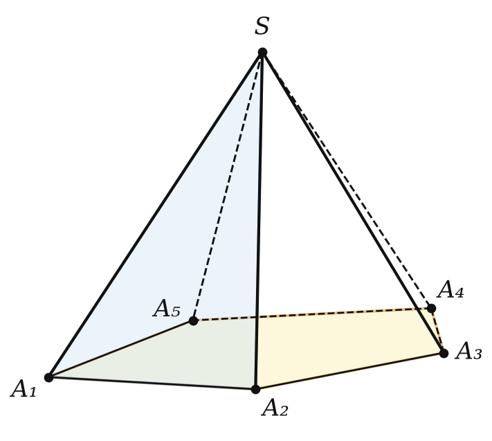
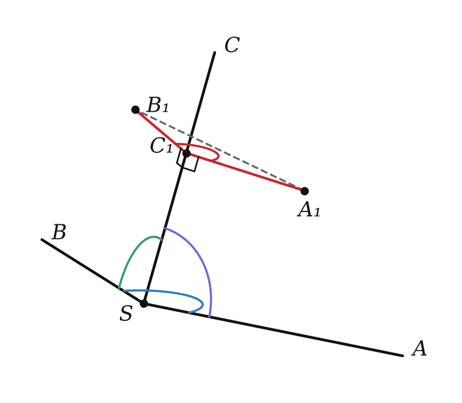

трёхгранный угол и теорема косинусов


| условие | пример «нет» |
|---|---|
| каждый плоский угол < суммы двух других | 50°, 60°, 120° |
| сумма плоских углов < 360° | 100°, 120°, 150° |
Все плоские углы 60°:
cos φ = (1/2 − 1/4) : (3/4) = 1/3
Сначала проверь, существует ли угол